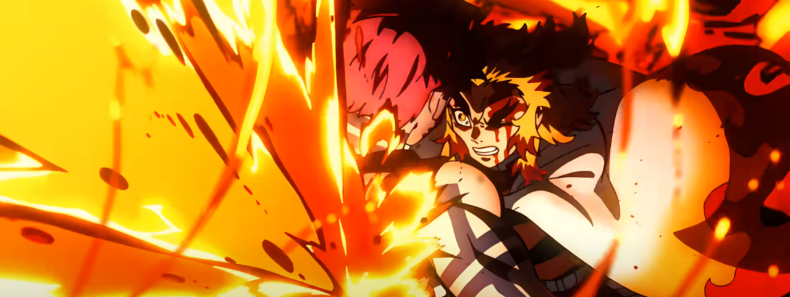
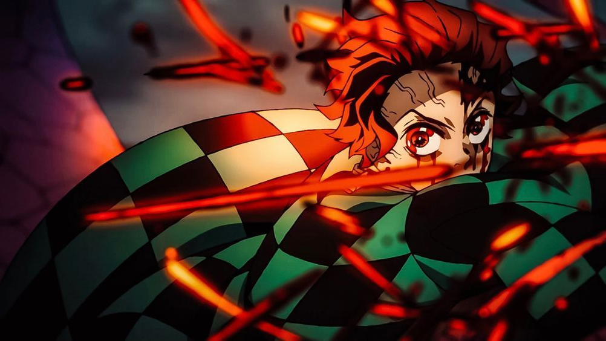

Awakening
Hinokami Kagura
A luta entre Tanjiro e Rui foi uma batalha transcendental, marcada pelo despertar da Respiração do Sol. Enfrentando o Demônio Aranha, Tanjiro mergulhou profundamente em sua determinação, desencadeando uma força interior que transcendia seus limites. Com a Respiração do Sol, ele se tornou uma figura radiante de esperança, desferindo golpes poderosos e iluminando a escuridão com seu fervor inquebrável. Nesse confronto épico, Tanjiro provou ser uma força imparável capaz de superar qualquer adversidade.
Hashira vs Upper Moon
Rengoku vs Akaza

A luta entre Rengoku e Akaza foi uma batalha de titãs, uma verdadeira dança mortal entre um dos mais habilidosos Hashiras e um Demônio dos Doze Kizuki. Rengoku, com sua incrível destreza e coragem inabalável, enfrentou Akaza em uma luta implacável pela justiça. Apesar da ferocidade do Demônio, Rengoku exibiu uma determinação inquebrantável, empunhando sua espada com maestria e liberando chamas ardentes.
Beyond Limits
Tanjiro vs Daki

A luta entre Tanjiro e Daki foi um momento de superação transcendental, onde Tanjiro ultrapassou seus próprios limites. Enfrentando a Demônio das Gueixas, ele foi impulsionado por sua determinação inabalável em proteger sua irmã e seus amigos. Cada movimento de sua espada era alimentado por uma força interior imensa, uma vontade inquebrável de derrotar o mal. Mesmo quando suas forças pareciam esgotadas, Tanjiro encontrou uma reserva profunda de coragem e determinação, permitindo-lhe alcançar um novo nível de poder.